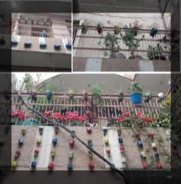

In Hyderabad, Telangana, Harishchandra Reddy is a successful hydroponic farmer. He always wanted to provide customers with high-quality greens at a reasonable price. He learned about many applied sciences to strengthen agriculture while in school, and on an agricultural tour, he and his classmates were escorted to a hydroponic farm where they defined the various ways used to develop greens.
He has always wanted to create his own hydroponic farm since then. He worked for a year after finishing his education and then decided to quit. Despite the fact that he was happy with his job, he wished to grow greens using hydroponic farming and to start his own business.
So, he studied hydroponics and other advanced agricultural technologies for six months while raising the capital needed to establish the farm. He was aware that the first investment would be significant, so he took his time gathering the money he needs from various sources. Following that, he immediately began establishing his hydroponics farm and began earning a huge sum of money which is up to 300 crores per year. Plants grown hydroponically in a greenhouse include tomatoes, peppers, cucumbers, strawberries, lettuces and cannabis.
Farmers can have total control over a hydroponic system.
They are able to manage pH and nutrients to make sure plants are getting the exact nutrients they need. The systems are closed and recycle the water that is not used by plants. The ability to grow indoors allows farmers to control temperatures and lighting schedules to improve plant production. Systems can be designed to make use of vertical space and increase planting density. Hydroponics also allow us to create farms in locations where soil conditions are too poor to support farming, or space is limited and a farm otherwise couldn’t exist.
When Compared To Traditional Soil-Grown Crop Production, Hydroponics Has the Following:
Up to 90% more efficient use of water.
Production increases 3 to 10 times in the same amount of space.
Many crops can be produced twice as fast in a well managed hydroponic system.
Decreasing the time between harvest and consumption increases the nutritional value of the end product.
Indoor farming in a climate controlled environment means farms can exist in places where weather and soil conditions are not favorable for traditional food production.
No chemical weed or pest control products are needed when operating a hydroponic system.
Our own Hydroponic Garden
